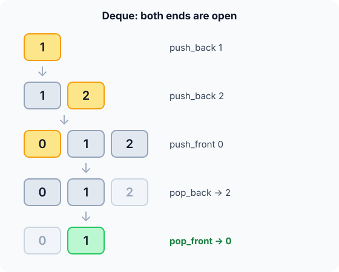

Prerequisites
The analogy
Everyday analogy
Think of a deck of cards on a table. You can put a card on top or slide one under the bottom, and you can take from the top or the bottom.
A deque works the same way. It's a queue that is open at both ends, so it can act as a stack (one end) or a queue (opposite ends) or both at once.
How it works
Start with a sequence of operations by hand
Start with an empty deque. Write it front to back. Predict, then open "Check".
Example: predict before you read
Step 1. push_back 1, push_back 2. Predict the deque.
Check
1, 2, like a queue so far.
Step 2. Cover the next line and guess: after push_front 0, what is the deque?
Check
0, 1, 2. The new item goes before the old front.
Step 3. pop_back, then pop_front. Predict both returned values.
Check
pop_back returns 2 and pop_front returns 0, leaving 1.

Quick recall: Before reading further, cover the text above and say out loud: which two operations make a deque behave like a stack?
Check your answer
push_back and pop_back (or push_front and pop_front): adding and removing at the same end.
Finish the picture: inside the circular array
Use an 8-slot array with front = 0, size = 0. Repeat the same operations.
- push_back 1, push_back 2. Predict their slots.
Check
Slots 0 and 1, as in a queue.
- push_front 0. Predict its slot.
Check
frontsteps back from 0 and wraps:(0 + 7) % 8 = 7. The deque, front to back, is slot 7, 0, 1 = 0, 1, 2.
Quick recall: Without scrolling up, say out loud: in a circular array, how does push_front find its slot?
Check your answer
It moves front one step backwards, wrapping from slot 0 to the last slot, and writes there.
The rule in plain words
Store items in a circular array with front and size. The back slot is (front + size) % capacity.
push_back and pop_back work at the back; push_front steps front back (wrapping), pop_front steps it forward.
Quick recall: Before you read the code, write what push_front does to front in your own words. Then check below.
Check your answer
Step front back by one, wrapping around if it was 0, store the value there, and add 1 to the size.
The code
Read this code after you have done the operations by hand. It will make more sense.
typedef struct { int data[8]; int front, size; } Deque; /* capacity 8 */
void push_front(Deque *d, int v) { /* caller checks size < 8 */
d->front = (d->front + 7) % 8; /* one step back, wrapping */
d->data[d->front] = v;
d->size++;
}
void push_back(Deque *d, int v) { d->data[(d->front + d->size) % 8] = v; d->size++; }
int pop_front(Deque *d) { int v = d->data[d->front]; d->front = (d->front + 1) % 8; d->size--; return v; }
int pop_back(Deque *d) { d->size--; return d->data[(d->front + d->size) % 8]; }Definition
What you just did, in one line: a deque (double-ended queue) supports adding and removing at both the front and the back.
flowchart LR
PF["push_front / pop_front"] <--> F["front: 0"]
F --- M["1"]
M --- B["back: 2"]
B <--> PB["push_back / pop_back"]
How fast is it?
Quick recall: Before looking at the table, predict: is reading the $i$-th item of an array deque $O(1)$ or $O(n)$?
Check your answer
$O(1)$: it's at slot (front + i) % capacity.
push_front steps back by one with wrap-around. Adding $\text{capacity} - 1$ instead of subtracting 1 keeps the index non-negative:
$$\text{front}_{\text{new}} \;=\; (\text{front} + \text{capacity} - 1) \bmod \text{capacity}$$With capacity 8 and front 0: $(0 + 7) \bmod 8 = 7$, exactly the slot we used.
| Operation | Cost | Why |
|---|---|---|
| push_front / push_back | $O(1)$ | One write with index arithmetic |
| pop_front / pop_back | $O(1)$ | One read, one index update |
| Read the $i$-th item (array deque) | $O(1)$ | Slot (front + i) % capacity |
| Insert in the middle | $O(n)$ | Items must shift |
Warning
In C, (front - 1) % 8 is −1 when front is 0, because % can return negative values. Add the capacity first: (front + 7) % 8.
Exam tip
Be ready to say how a deque simulates both a stack (same end) and a queue (opposite ends), and that all four end operations are $O(1)$.
Common mistakes
- Computing
(front - 1) % capacity, which gives a negative index in C. - Updating
sizebefore reading in pop_back in the wrong order, which reads the wrong slot. - Forgetting to check for full or empty before pushing or popping.
Try it yourself
Exercise 1 (warm-up)
Starting empty: push_front 5, push_back 6, push_front 4. What is the deque, front to back?
Hint
push_front always becomes the new first item.
Answer
4, 5, 6.
Exercise 2 (a bit harder)
Find the maximum of every window of 3 in [1, 3, 2, 5, 4] by keeping, in a deque, indices of values in decreasing order (drop smaller values from the back, drop indices that left the window from the front). What are the maxima? Write your answer down before you open it.
Show answer
Windows [1,3,2], [3,2,5], [2,5,4] give 3, 5, 5. Each index is pushed and popped at most once, so the whole scan is $O(n)$.
Did you know?
Did you know?
C++ std::deque, Java's ArrayDeque and Python's collections.deque are all deques. Python's docs recommend deque over list for queues because list.pop(0) is $O(n)$.
Work-stealing schedulers give each CPU core its own deque: a core works from one end, and idle cores steal work from the other end.
Key points to remember
If you remember one thing from each line, remember the because.
- All four end operations are $O(1)$ because each one touches one slot and updates one index.
- A deque can act as a stack or a queue because it allows both same-end and opposite-end use.
- push_front adds capacity − 1 because C's
%can return a negative number for −1. - Random access is $O(1)$ in an array deque because item $i$ sits at
(front + i) % capacity. - Sliding-window maximum is $O(n)$ with a deque because each index enters and leaves it at most once.
Self-check questions
Answer these in order, out loud. They follow the page, so your answers become the script of your video.
- How is a deque like a deck of cards on a table?
Sample answer
You can add or take cards from both the top and the bottom, just as a deque allows operations at both ends.
- Walk through push_back 1, push_back 2, push_front 0, pop_back, pop_front.
Sample answer
The deque becomes 1; 1, 2; 0, 1, 2. pop_back returns 2 and pop_front returns 0, leaving 1.
- Why does push_front compute
(front + 7) % 8instead of(front - 1) % 8?A good answer mentions what C does with negative numbers.
Sample answer
In C,
-1 % 8is −1, which is not a valid index. Adding 7 gives the same result modulo 8 but never goes negative. - So what is a deque, in one sentence?
Sample answer
A double-ended queue that supports adding and removing at both the front and the back.
- Why can a deque replace both a stack and a queue?
Sample answer
Using one end only gives LIFO, like a stack; adding at one end and removing at the other gives FIFO, like a queue.
- What do the end operations and random access cost?
Sample answer
push and pop at either end are $O(1)$, and reading item $i$ in an array deque is $O(1)$; inserting in the middle is $O(n)$.
- Why is a deque used for the sliding-window maximum?
Sample answer
It keeps candidate indices in decreasing order of value: new items remove smaller ones from the back, and expired indices leave from the front, all in $O(1)$ each.
- If you had to teach this to a friend in 2 minutes, what would you leave out, and why?
Sample answer
I'd leave out the circular-array index arithmetic and the sliding window. I'd keep the deck-of-cards analogy, the five-operation trace, and "both ends $O(1)$, can act as stack or queue".
External resources
- GeeksforGeeks: Deque introduction: operations and applications.
- Wikipedia: Double-ended queue: implementations and uses.
- Python docs: collections.deque: a real deque API with $O(1)$ ends.
Videos
- YouTube search: sliding window maximum with a deque: the classic deque application.